DRBL 操作指南
作者：TeliuTe 来源：基础教程网
十一、Clonezilla备份本机非系统分区 返回目录 下一课在双系统中，可以用 Clonezilla 来备份另一个系统分区，或者也可以备份数据分区；
1、安装 drbl 和 clonezilla
1）添加 drbl 的源，输入命令 sudo gedit /etc/apt/sources.list 输入下面的两行然后保存退出，红色改成自己的Ubuntu版本；
deb http://free.nchc.org.tw/ubuntu maverick main restricted universe multiverse
deb http://free.nchc.org.tw/drbl-core drbl stable
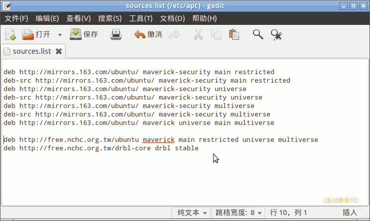
2）然后执行命令 sudo apt-get update 刷新软件源，然后输入 sudo apt-get install drbl clonezilla 安装软件；
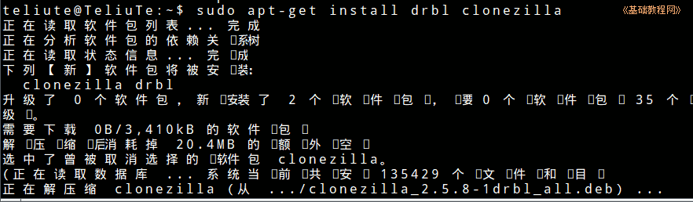
3）输入命令 sudo /opt/drbl/sbin/clonezilla 按回车键，进入再生龙界面；
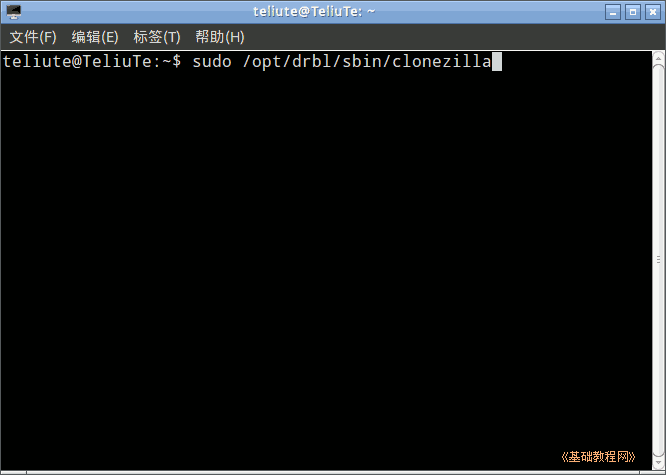
4）在出来的模式选择面板中，选择第一个“device-image 备份/还原硬盘分区镜像”，按回车键继续；
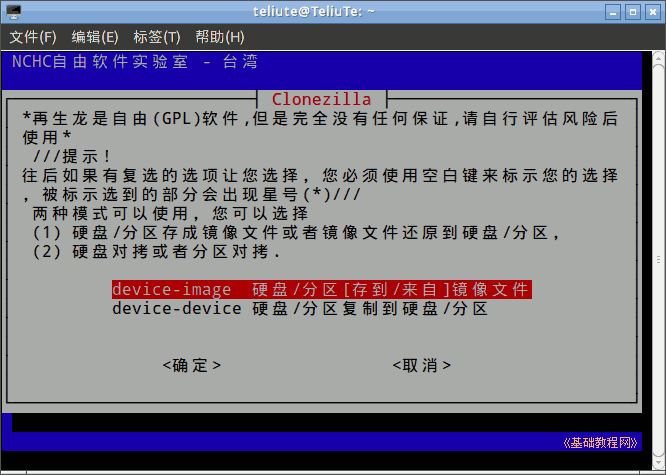
5）接下来是设定镜像保存的分区，选择第一个“本机上的分区”，按回车键继续；
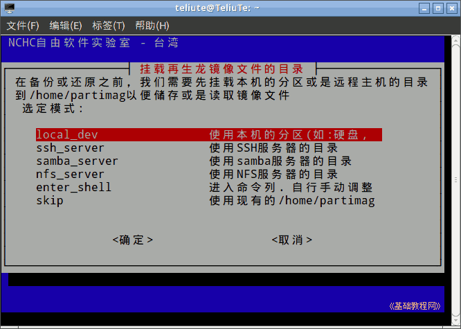
6）出来提示，可以插入一个 U 盘或可移动磁盘作为镜像存放的位置，直接按回车键继续；
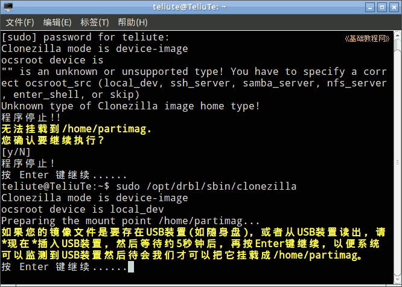
7）在接下来的选择镜像文件存放的分区，选择一个剩余空间大的分区；
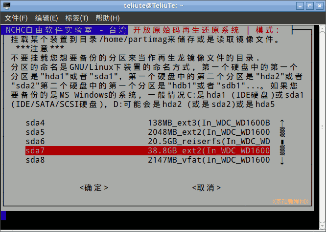
8）接下来询问保存在哪个文件夹里，直接按回车键保存到根目录里；
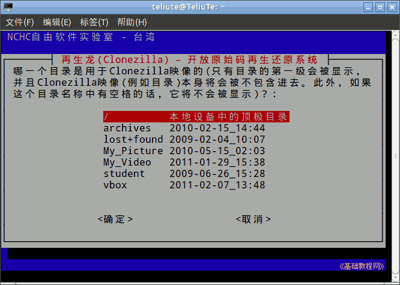
9）接下来显示当前系统分区的挂载情况，按回车键继续；
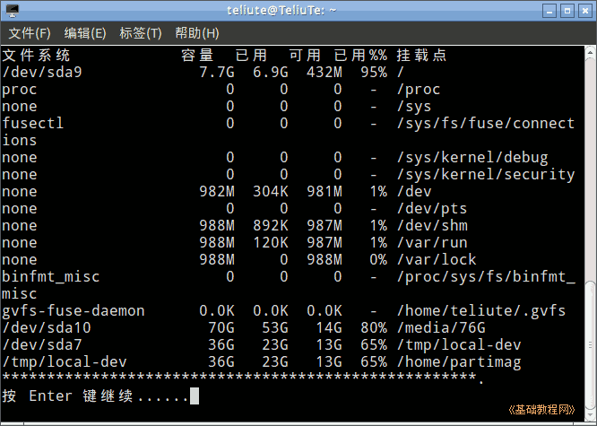
2、备份系统
1）在接下来的向导模式中，选择第一项“初学者模式”，按回车键继续；
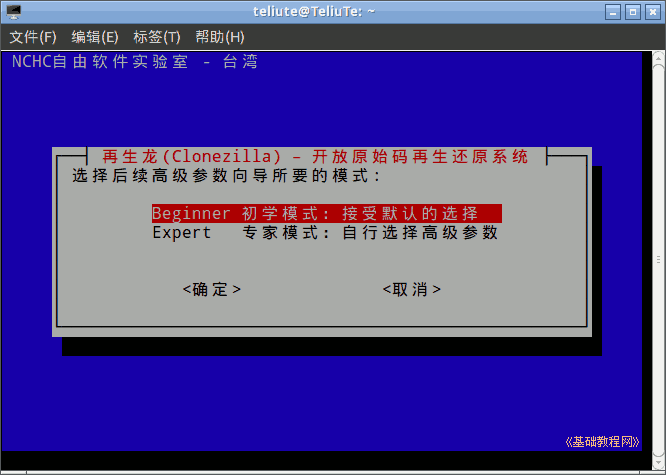
2）接下来的选择要备份的项目时，按下方向键选择第二项“储存本机分区”按回车键继续；
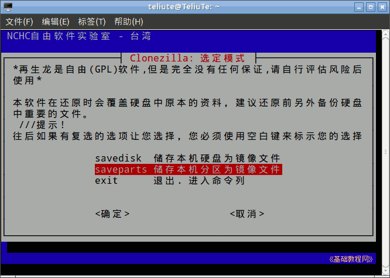
3）接下来是保存镜像的文件名，直接按回车键继续，用默认的文件名；
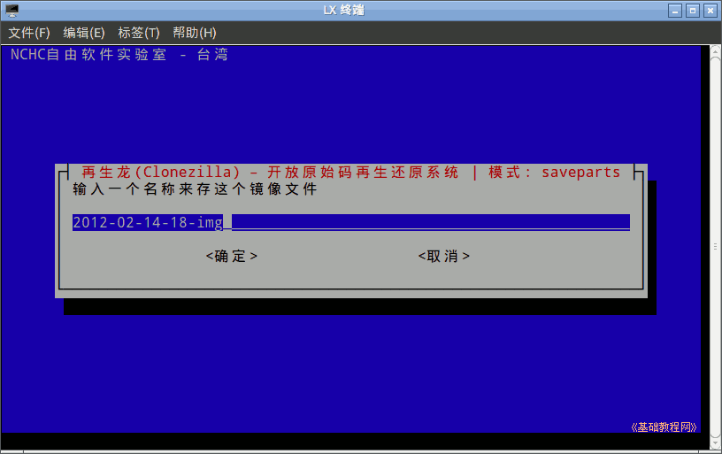
4）接下来是选择要备份的分区，按方向键选择分区，按空格键在它前面打上星号标记，然后回车键继续；
注意：当前系统所在分区因为不能卸载而没有显示在列表中，可以用 Live CD 来备份
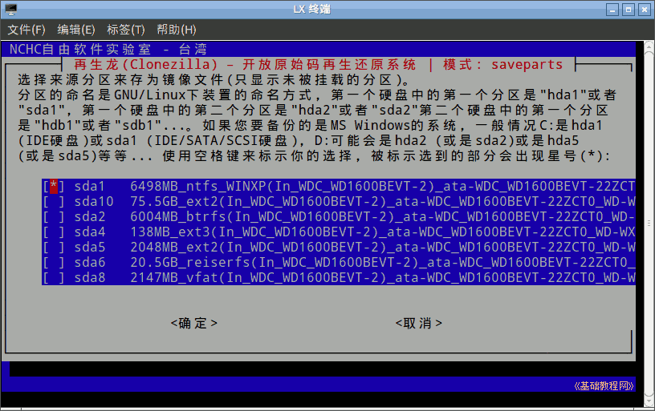
5）接下来的检查项，直接按回车键跳过检查继续；
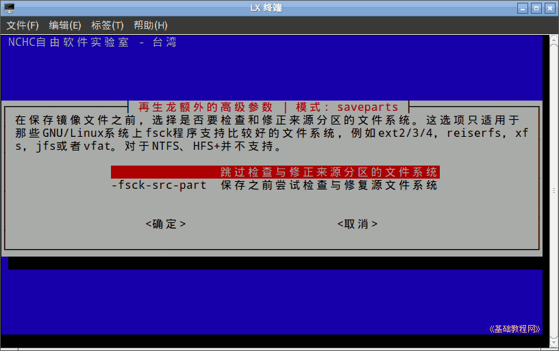
6）接下来的是否检查镜像，按回车键选择检查继续；
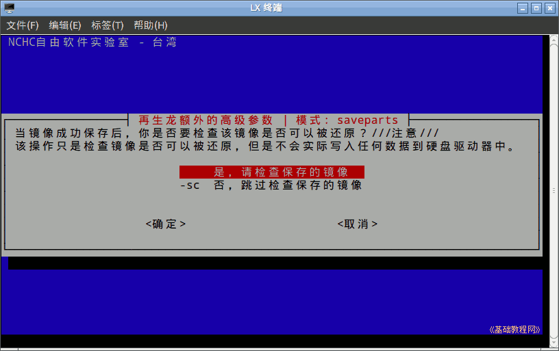
7）接下来给出操作的命令，按回车键继续，然后是确认操作，输入 y 按回车键开始备份；
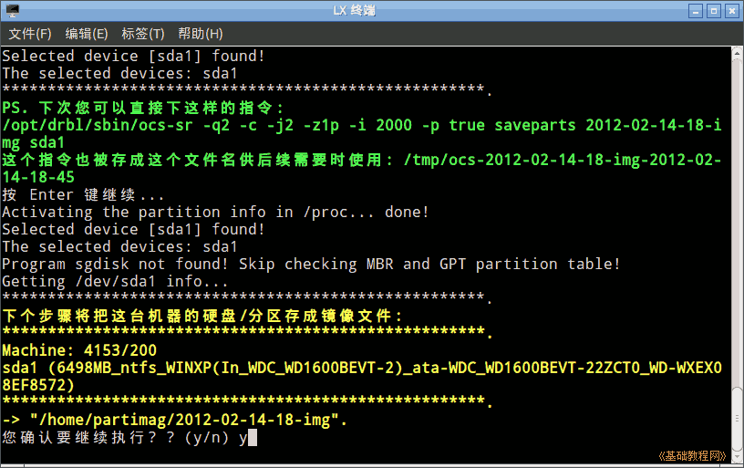
8）接下来耐心等待备份操作；
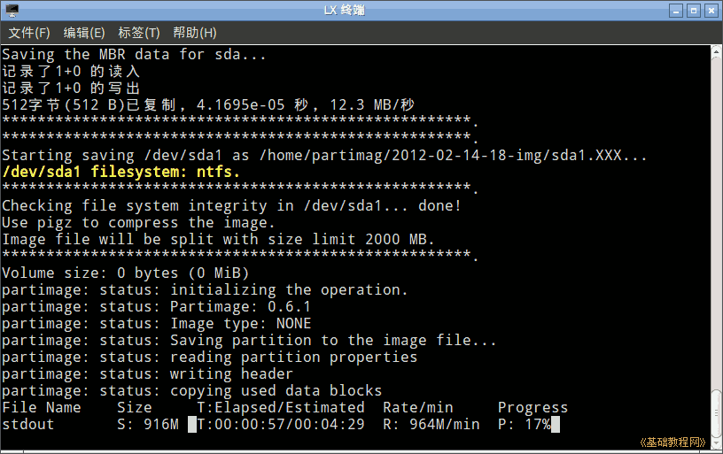
9）备份后接着是检查镜像，由于备份的是NTFS，跳过检查，按回车键完成；
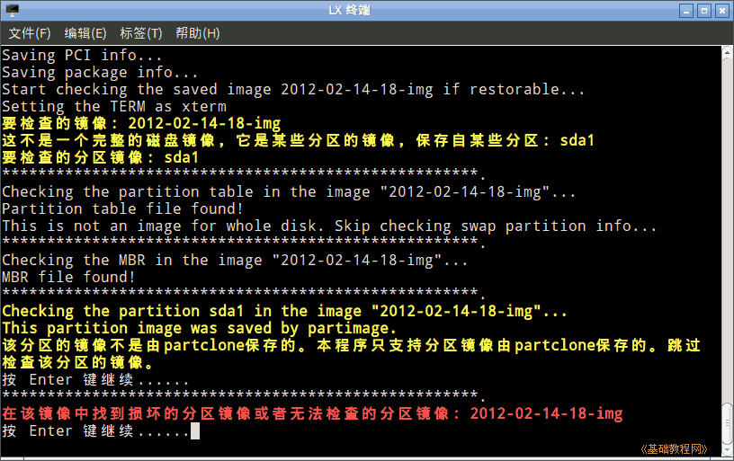
本节学习了Clonezilla备份本机非系统分区的基础知识，如果你成功地完成了练习，请继续学习下一课内容；
本教程由86团学校TeliuTe制作|著作权所有
基础教程网：http://teliute.org/
美丽的校园……
转载和引用本站内容，请保留版权信息和本站链接。